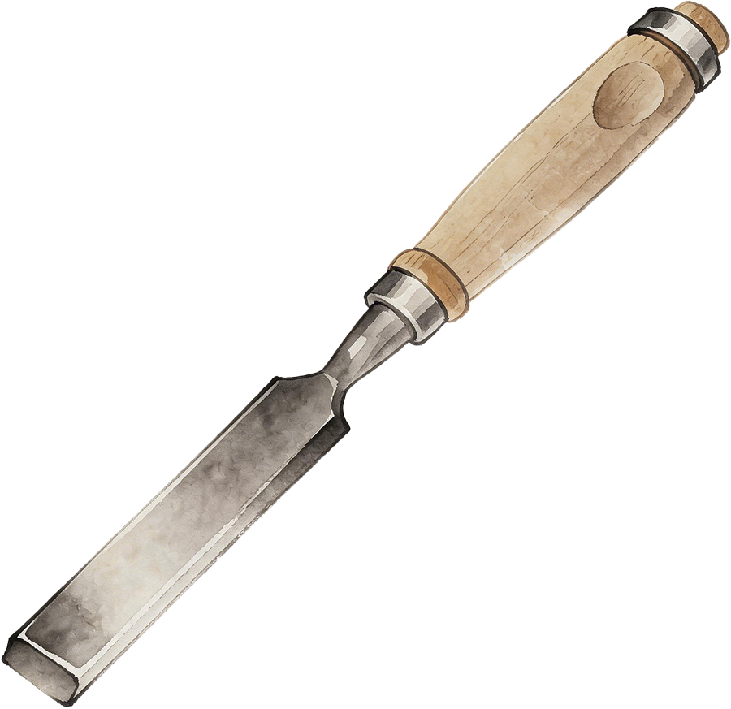
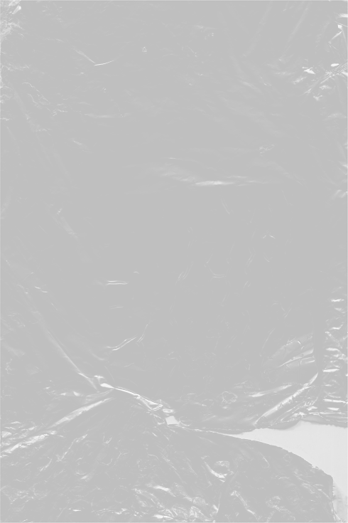
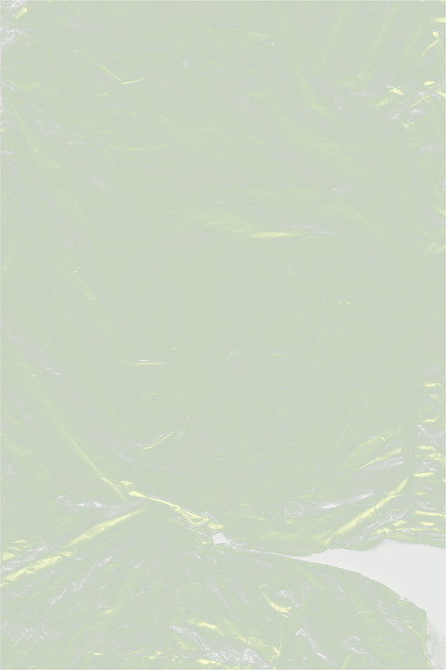
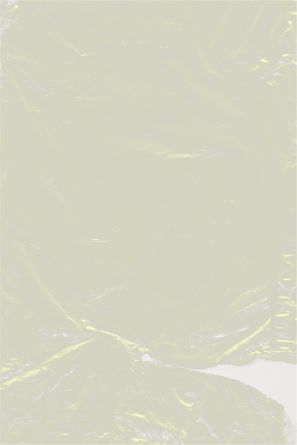
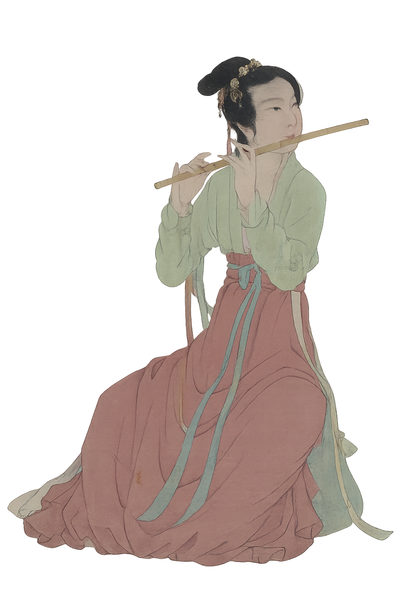

应取3年以上的老竹
直径2-3公分
新竹
年岁尚浅，继续寻觅
应取质地均匀、壁厚杆直、无虫蛀的竹材
歪竹
杆身歪斜，再择良材
以多年苦竹为佳
直竹
良竹已择
‹
›
择竹
择竹
汗青
开孔
试音
滚轮滑动 · 深入丛林
烘烤去湿可防止竹笛后期开裂
点击炉子开始烘烤
点击白色按钮拿起凿子

吹孔
膜孔
一孔
二孔
三孔
四孔
五孔
六孔
竹笛开孔节奏
宫
吹孔
商
膜孔
角
一孔
徵
二孔
工尺谱

芦苇膜
音色清亮

竹膜
音色温润

纸膜
音色浑厚
确认贴膜
1
2
3
4
5
6
7
择一笛膜，辨其音色
选膜后使用数字键 1-7 听音
汗青完成
竹管已去湿定型，内节已通

笛制作流程体验完成
重新体验
继续探索